Dynareg - Stock in document type
Dynareg - Separate Item Issue Plugin
|
|
Dynareg - Separate Item Issue Plugin - Shop - Licence : Once-off -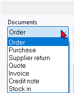 Enable : "Documenten - Aparte artickel uitgifte" Enable : "Documenten -> Alleen inkoop" Enable : "Documenten -> Verminder herbestel by doorboeken inkoop" BUG - Disables the Ledger tab of all Stock items- See - Dynareg - Extra documnent types - BUG - Stock items - |

Known issues
Input menu
Input menu - Stock out - launches Stock in can process creditors. On Documents grid document type Stock in launches creditors.
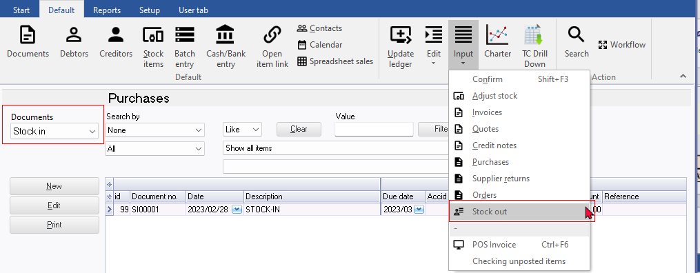
Print posted transactions - Cannot print posted transactions for Stock in
Creditors - Documents tab - "Show transactions" context menu. Cannot view and print "Transactions" screen "Batch type report - Posted batches" report. Transactions screen is empty and "No data to print!" error. When create Stock in Document - Output tax is included in the selected stock item and not Input tax. In Ledger analyser cannot trace and print the transactions for the Stock in document type.
"Right-click and select "Show transactions" on the context menu. This lists the transactions on a "Transactions" screen for the selected document. Note: For the Stock out document type, the quantities will be adjusted, and the transactions for cost of sales will be adjusted in a journal. Additionally, for the Stock in document type, the "Transactions" screen may be empty, as it primarily adjusts quantities. For the Stock out document type, the cost of sales transactions, will be listed the "Transactions" screen."
Update ledger / Delete documents - Titlebar captions
- Update documents - Stock in - Delete supplier returns
- Delete documents - Stock in - Delete supplier returns
Print layout files
The plugin prints the layout file selected in the "Layout file point-of-sale" field within Documents setup. This setting does not work for the "Stock in" document type By default, the "Stock in" will print the till slip layout file "POS Tax invoice".

NOTE If "Layout file" is selected as the option within Documents setup for other document types, the "Default" option on Document grid does not work. You need to select the "Layout file" or other layout file. You have the option to choose a different layout file for "Stock in" document types.
Layout file - The default "Layout file" for all document types, will print the headings in the Types on Tools → Customise language.
Stock in - Statement
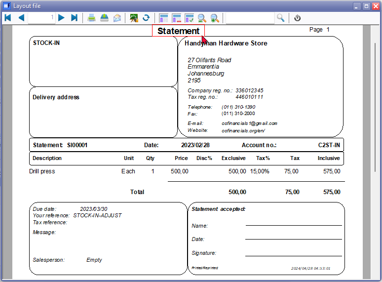
|
|
Dynareg - Separate Item Issue Plugin - Shop - Licence : Once-off - Enable : "Documenten - Aparte artickel uitgifte" Enable : "Documenten -> Alleen inkoop" Enable : "Documenten -> Verminder herbestel by doorboeken inkoop" |
Activation of the "Dynareg Only purchase via new type" plugin
To activate the "Dynareg Only purchase via new type" plugin and enable the "Stock in" as an additional document type, you'll need to follow these steps:
- Enable the "Aparte artickel uitgifte" plugin. This plugin adds the "Stock in" and "Stock out" document types.
- Enable the "Alleen inkoop" plugin. This plugin also adds the "Stock in" and "Stock out" document types.
- Enable the "Verminder herbestel by doorboeken inkoop" plugin. This plugin specifically adds the "Stock in" document type. Note that the "Stock out" document type, which is added when you enable the previous two plugins, will be removed.
After enabling each of these plugins, be sure to reopen your Set of Books. This step is crucial to ensure that the changes take effect properly.
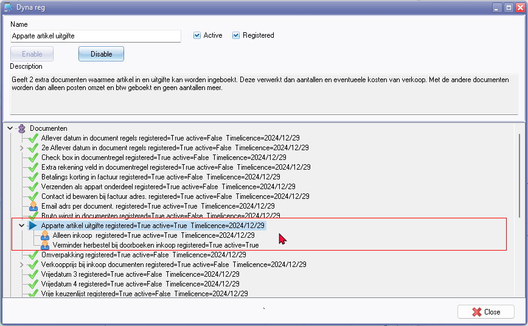
|
Dynareg - Separate Item Issue Plugin - Shop - Licence : Once-off - Enable : "Documenten -> Aparte artickel uitgifte" Enable : "Documenten -> Alleen inkoop" Enable : "Documenten -> Verminder herbestel by doorboeken inkoop" |
Reduce reorders when rebooking purchases
When transferring a purchase, reduce the reorder. (2nd hand store)
Access to Stock in document type
In addition to the standard document types, this plugin adds Stock in document type, serving distinct purpose.
The Stock in is added alongside the existing purchase document types: purchases, supplier returns, and orders. Document numbers for Stock in start with "SI00001".
Accessing the Stock in additional document type:
You may access the Stock in additional document types via the following options:
- Default ribbon: Navigate to Documents and select either the standard document types or the Stock in document type. This launches the document entry screen as an integrated part of the document grid.
- Input menu: Choose from the standard document types or the Stock in document type from the Input menu. This launches the document entry screen as a separate screen.
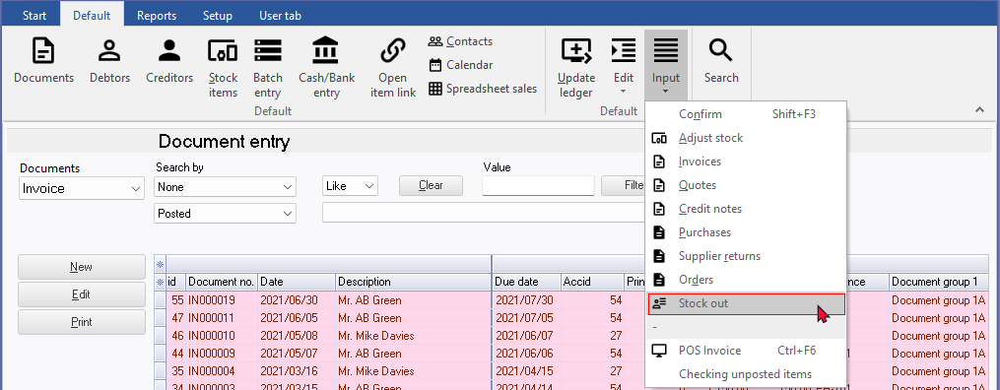
Additionally, the "Stock in" document type is available as options on the context menu of the document grid, accessible via Documents → Copy to → Stock in.
Document grid - Search and Filter options
Filter and Search options
For the Stock in document type, utilize the powerful grid for filtering and searching. Some of the available options include:
- Document status: Filter by Unposted, Posted, or view All documents.
- Groups: Filter for specific document groups.
- Document details: Access all available document details, including references, dates, and more.
Additionally, you can build custom filters tailored to your specific needs.
Stock in
The "Stock in" document type resembles the "Purchase" document type. To create a new document for the Stock in document type, click New. On the "Creditor accounts" screen, select a creditor (supplier/vendor) account and click Open. If no account exists, you may create a new creditor account.
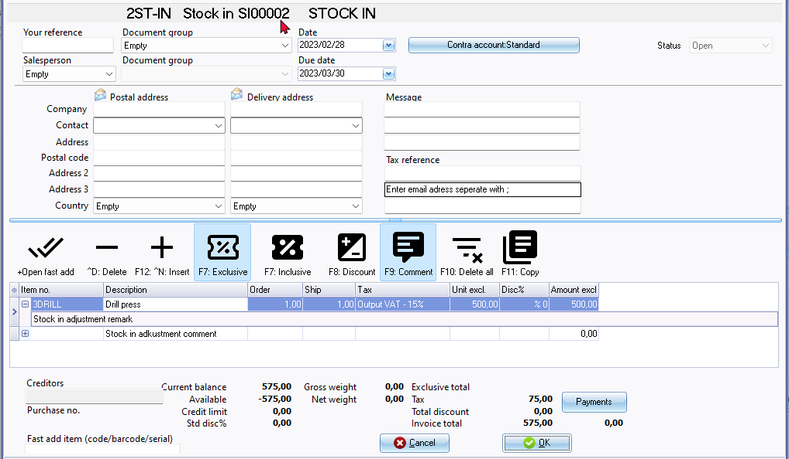
On the Stock in document entry screen, select the stock item. You may enter references in the "Your reference" field in the document header. Additionally, you can include remarks and comments:
- Remarks: Beneath each stock item, you can add remarks. These remarks will print in document layout files but are not searchable in the central search.
- Comments: Use the F9: Comment option to enter comments for each item.
The document references entered in the "Your reference" field in the document header, along with the comments, are searchable using the central search option (accessible via the Search on the Default ribbon).
Update to ledger
If the "Auto-post document on print" setting on the Documents setup in the Setup menu (accessible via the Setup ribbon) is not activated, or if you have not yet printed the document, you will need to manually post the Stock in documents.
To do this, press F3 or select Update Ledger on the Default ribbon. The "Update Invoices" screen is displayed:
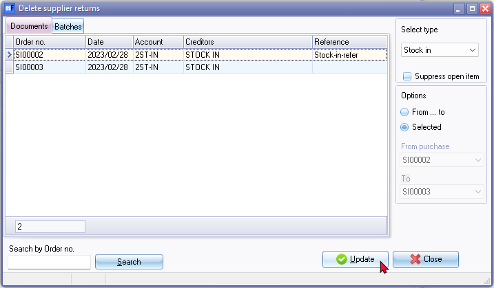
- Select the Stock in document type and click Update.
View the posted transactions
Once the Stock in documents have been posted (updated to the ledger), you may view the transactions in the following options:
Stock items (Default ribbon)
Includes the Stock in document types if processed for the selected stock item.
Document groups tab
This tab will include posted as well as unposted documents for the Stock in document type.
- Double-click to print the selected document or choose a different layout file.
- Right-click to open the document entry screen in a separate window. Note that both posted and unposted documents cannot be edited.
Transactions tab
This tab will only include posted documents for the Stock in document types.
- Right-click and select "Open document" from the context menu. Note that posted documents cannot be edited.
Creditors (Default Ribbon)
The Stock in document type should be listed since you can only select a creditor account.
Documents tab
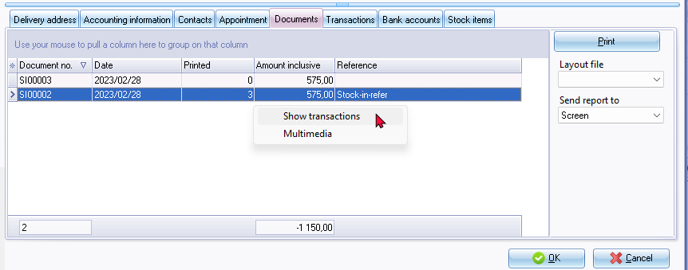
- Includes both posted and unposted documents for the Stock In document type.
- Here, you may:
- Print the document layout file: Double-click to print the selected document or click the Print button. You may select a different layout file.
- View and Print transactions: Right-click and select "Show transactions" on the context menu. This lists the transactions on a "Transactions" screen for the selected document. Note: for Stock In document type, the "Transactions" screen may be empty, as it primarily adjusts quantities.
Stock item tab
- Includes both posted and unposted documents for the Stock in document type type.
- The stock in document type numbers will consist of 7 digits of which the first two is prefixed with "SI" .The document type for the Stock out is indicated as "Stock-"
Input → Stock out menu
Input → Stock out menu should read Stock in - See document type on the Documents grid.
The Input → Stock out menu launches the Document entry in a separate window. New Invoice will create an Invoice "X IN000025, etc. instead of a Stock in document type with document number "SI00001"
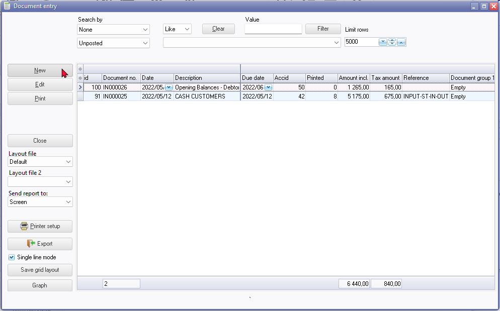
The invoice on document entry
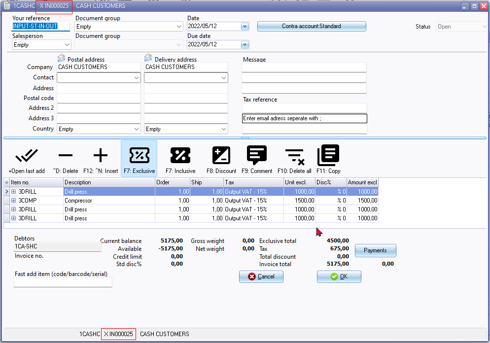
NOTE : This document "Invoice" only listed from the Input → Stock out menu and is not available on:
- Documents grid (both Invoices and Stock in document types)
- Update ledger (cannot post)
- Delete documents (cannot delete)
- Print uses the "Layout file point-of-sale" field setting within Setup → Documents setup.
Stock type
Stock tab - Disassemble (Stock item type)
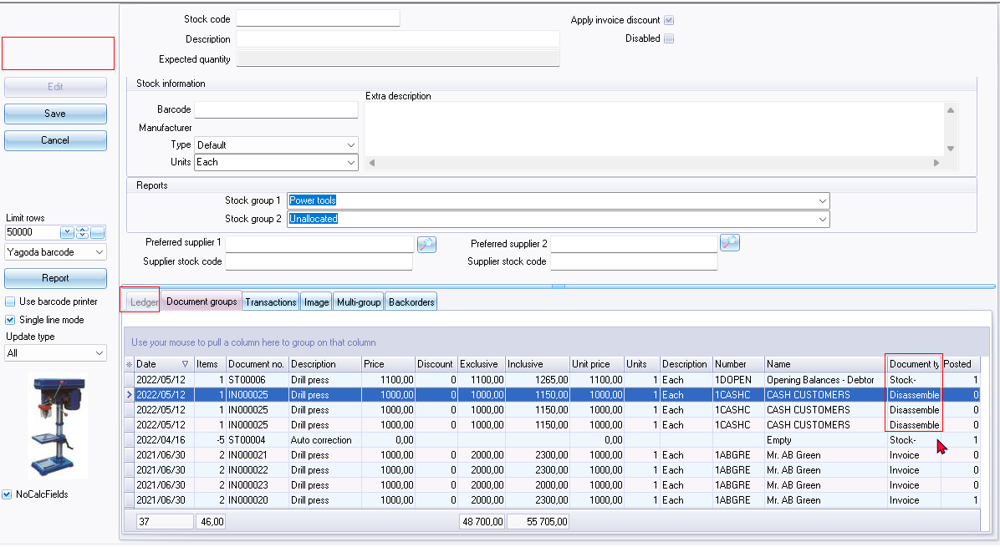
Disassemble (Stock item type)
BOM Production on Stock in / Stock out report
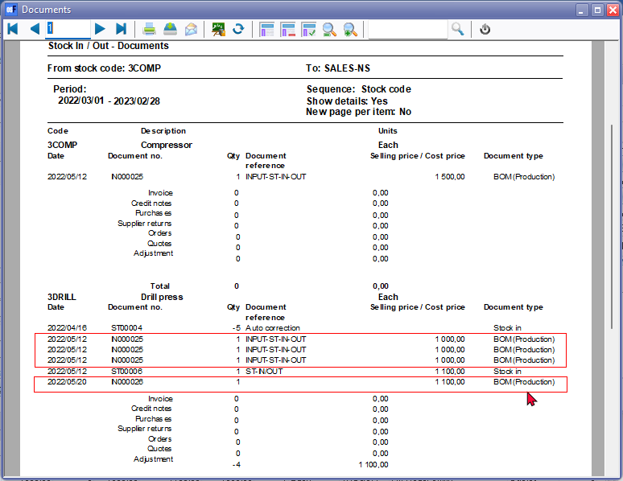